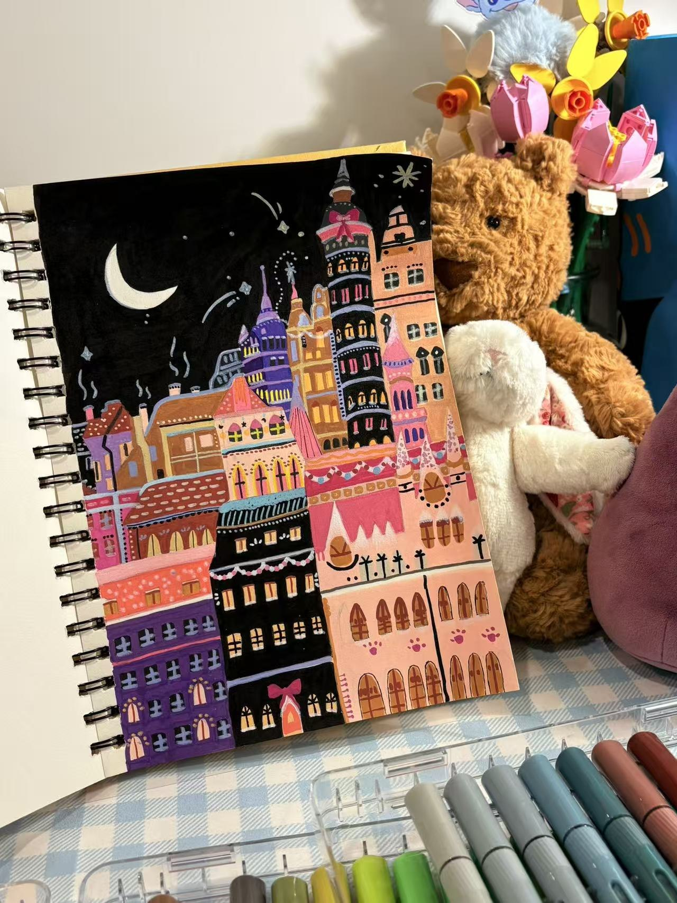
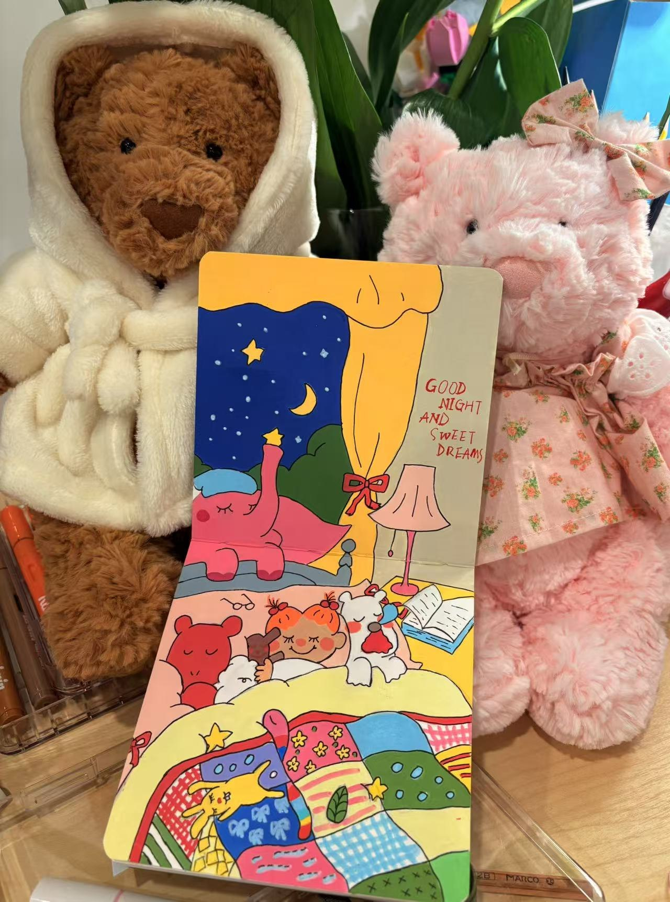
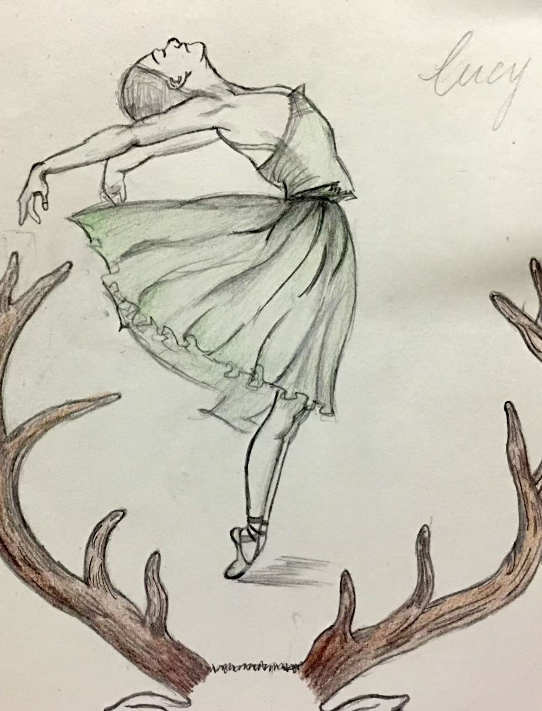
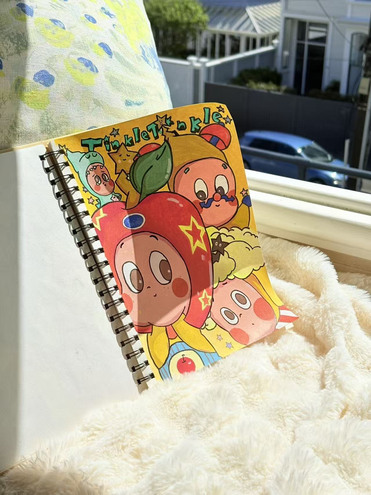
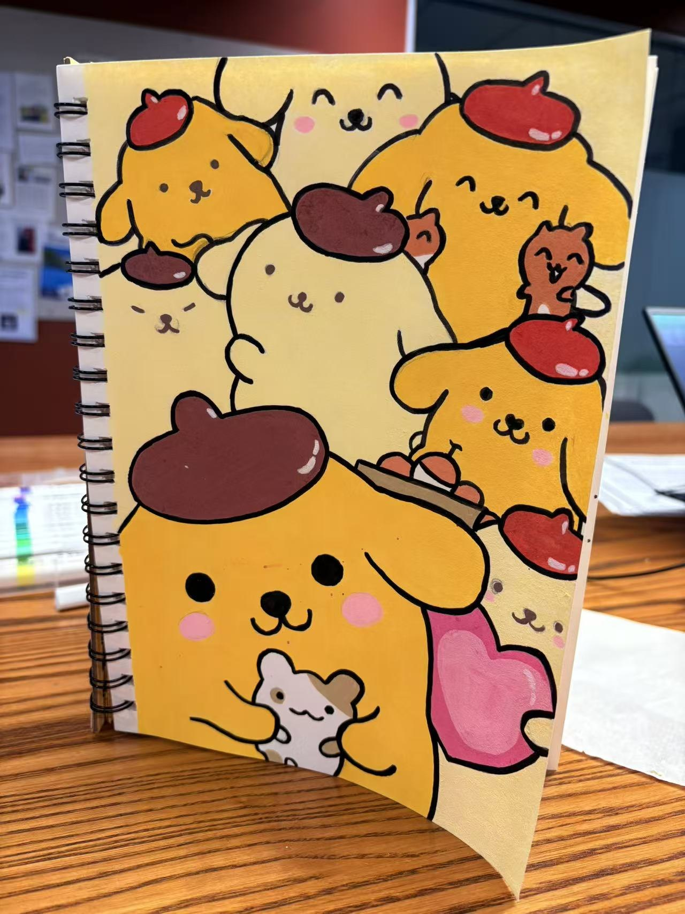
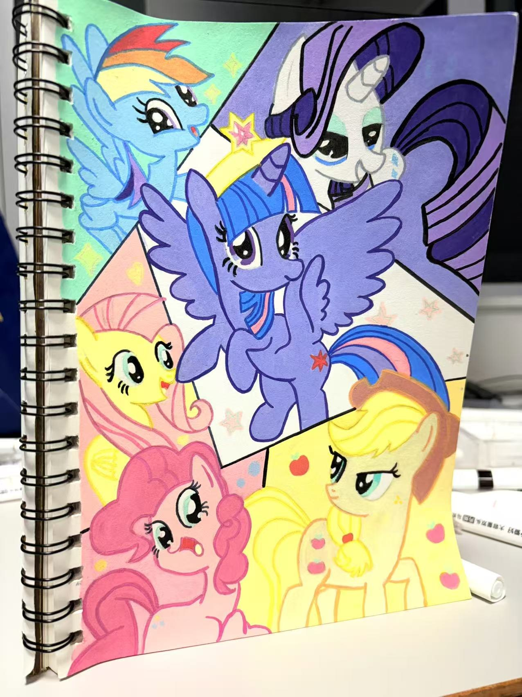

Night Cityscape
Colourful rooftops beneath a moonlit sky.
A small creative corner
Colourful sketchbook paintings, character studies and drawings made in my spare time.

Colourful rooftops beneath a moonlit sky.

A cosy bedtime story in bright colours.

A pencil study of movement and balance.

Playful characters and colourful details.

A warm and cheerful character study.

A bright collage of familiar characters.
A little about this gallery
I enjoy painting and drawing, especially experimenting with colour, composition and storytelling. This gallery brings together a selection of sketchbook pieces and studies that I have enjoyed creating.
Some pieces are fan art featuring existing characters. The character designs and related intellectual-property rights belong to their respective owners.